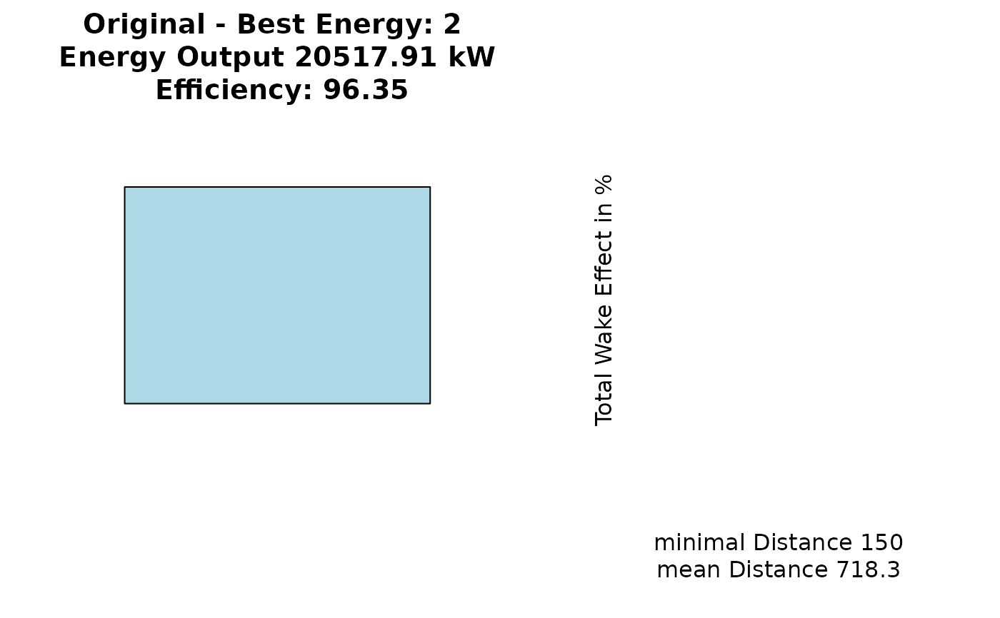

random_search.RdPerform a random search in the grid cells, to further optimize the output of the wind farm layout.
random_search(result, Polygon1, n, best, Plot, GridMethod, max_dist = 2.2)
| result | The resulting matrix of the function |
|---|---|
| Polygon1 | The Polygon for the wind farm area. |
| n | The number of random searches to be perfomed. Default is 20. |
| best | Which best indidvuals should be the starting conditions fo a random search. The default is 1. |
| Plot | Should the random search be plotted? Default is FALSE |
| GridMethod | Should the polygon be divided into rectangular or hexagonal grid cells? The default is rectangular grid cells and hexagonal grid cells are computed when assigning "h" or "hexagon" to this input variable. The randomly generated points might be placed outside their hexagons. |
| max_dist | A numeric value multiplied by the rotor radius to perform collision checks. Default is 2.2 |
Returns a list.
Other Randomization: plot_random_search,
random_search_single
load(file = system.file("extdata/resultrect.rda", package = "windfarmGA")) load(file = system.file("extdata/polygon.rda", package = "windfarmGA")) new <- random_search(resultrect, polygon, n = 20, best = 4) plot_random_search(resultRS = new, result = resultrect, Polygon1 = polygon, best = 2)